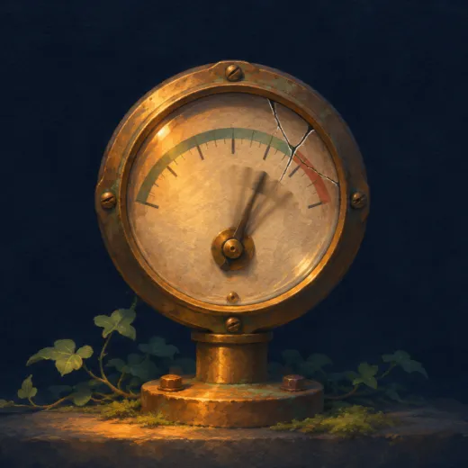

Fortbildung · Lehrkräfte aller Schulformen in NRW
Wie KI funktioniert
Sprachmodelle, Wahrscheinlichkeiten und Agenten
Sprachmodelle, Wahrscheinlichkeiten und Agenten

Lehrkräfte müssen „in der Lage sein, deren technische Grundlagen zu verstehen“.KMK-Handlungsempfehlung zum Umgang mit KI, 10.10.2024, Themenbereich 3
Training, Tokens, Bedeutung, Kontext
Wahrscheinlichkeit, Zufall, Temperatur
Harness, Werkzeuge, Schleife
KMK, AIS.chat, Möglichkeiten, Grenzen, Energie
Was beim Training entsteht und wie das Modell Text sieht

Ergänzen Sie:
Sie haben gerade das wahrscheinlichste Wort gewählt. Ein Sprachmodell macht dasselbe, Wort für Wort, für jeden Text.
Bekannte Modelle: GPT (ChatGPT), Claude, Gemini, Llama, Mistral. Im Unterricht in NRW: das Landeswerkzeug AIS.chat.
Warum jede Antwort ein wenig Zufall enthält

Eine Antwort mit 300 Wörtern braucht etwa 400 solche Schritte.
Satzanfang
Temperatur: 1,0
Rechte Spalte: wie oft jedes Wort gezogen wurde. Die Werte sind ausgedacht.
Faustregel: Mehr Tokens bedeuten mehr Rechenarbeit. Das gilt für lange Antworten, Denk-Modelle und Agenten.
Schülerinnen und Schüler brauchen das Prinzip: KI liefert Wahrscheinliches, nicht Wahres.
Aufgaben, bei denen Weg, Entwürfe und Begründung zählen, nicht nur das Ergebnis.

KI-Erkennungsprogramme irren sich oft, auch bei Texten von Menschen.
Was passiert, wenn ein Sprachmodell Werkzeuge bekommt
| Chat | Agent | |
|---|---|---|
| Auftrag | eine Frage | ein Ziel |
| Ablauf | eine Antwort, dann wartet das Modell | plant Schritte und arbeitet sie nacheinander ab |
| Werkzeuge | keine oder wenige | Dateien, Browser, Programme, Suche |
| Prüfen | der Mensch prüft jede Antwort | der Agent prüft Zwischenergebnisse selbst, der Mensch das Ergebnis |
| Rolle des Menschen | kopiert, fügt ein, führt aus | gibt Ziel und Rechte vor, gibt frei, prüft |
Claude Code, OpenAI Codex, Gemini CLI. Arbeiten mit Dateien und Programmen in einem Ordner.
ChatGPT Agent, Claude in Chrome. Öffnen Webseiten, lesen, füllen Formulare aus.
Assistenten in Office, Google Workspace und Lernplattformen. Arbeiten mit Dokumenten und Tabellen.
Stand November 2026. Die Namen ändern sich schnell, die Bauart bleibt: Modell, Harness, Werkzeuge, Rechte.
Auftrag in einem Absatz
„Erstelle eine Präsentation für Lehrkräfte über die Funktionsweise von KI, mit Animationen und Bildern, und stelle sie online.“
Die Lehrkraft gibt das Ziel vor, verlangt Änderungen, prüft das Ergebnis und trägt die Verantwortung.
Rahmen, Landeswerkzeug, Möglichkeiten, Grenzen und Energie

Beschluss aller 16 Länder vom 10.10.2024. Haltung: konstruktiv-kritische Auseinandersetzung mit KI, kein Verbot.
Lehrkräfte sollen die Technik verstehen und Chancen, Grenzen und Risiken einschätzen können.
Ein allgemeines KI-Verbot bei Hausarbeiten ist nicht durchhaltbar. Stattdessen: Absprachen zu Nutzung und Kennzeichnung.
KI kann vorkorrigieren. Die Note gibt die Lehrkraft (Art. 22 DSGVO).
Präsentation, Verteidigung, Reflexion und Prozessbewertung gewinnen an Gewicht.
Auch AIS.chat zieht Wort für Wort mit Wahrscheinlichkeit. Prüfen bleibt Pflicht.
Keine Namen, Noten oder Diagnosen eingeben.
Lesetexte in drei Niveaus, Bildkarten, kleine Übungsseiten zum Antippen
Texte in Leichter Sprache, Schritt-für-Schritt-Anleitungen, Bildbeschreibungen
interaktive Übungen mit Selbstkontrolle, nachgerechnete Lösungen, Erklärvideos
Fallsituationen, Klausurtraining, Simulationen, Auswertung von Messdaten
Für alle: Material aus Lehrplänen ableiten, Tabellen auswerten, Elternbriefe in mehreren Sprachen entwerfen, Webseiten für den Kurs bauen.
Mit Lernenden AIS.chat. Keine Schülerdaten in private Konten.
Senden, Löschen, Veröffentlichen nur nach Freigabe.
Versteckter Text auf Webseiten kann Agenten falsche Befehle geben.
bleibt bei der Lehrkraft. Fachlich gegenlesen.
Rahmen: DSGVO, Urheberrecht, EU-KI-Verordnung Art. 4 (KI-Kompetenz), KMK-Handlungsempfehlung 2024, Handlungsleitfaden des MSB NRW.
Einzeln wenig: 300 Textanfragen ≈ 1 Liter Wasser kochen.
Teuer: Denk-Modelle, Video und Agenten brauchen ein Vielfaches.
In Summe viel: effizienter, billiger, mehr Nutzung (Rebound).
Animationen: Remotion. Bilder: ChatGPT. Zusammengestellt mit Claude Code. · Impressum · Datenschutz